LibrePCB 2.0
More than just a new look
Urban Bruhin
February 1, 2026
About LibrePCB
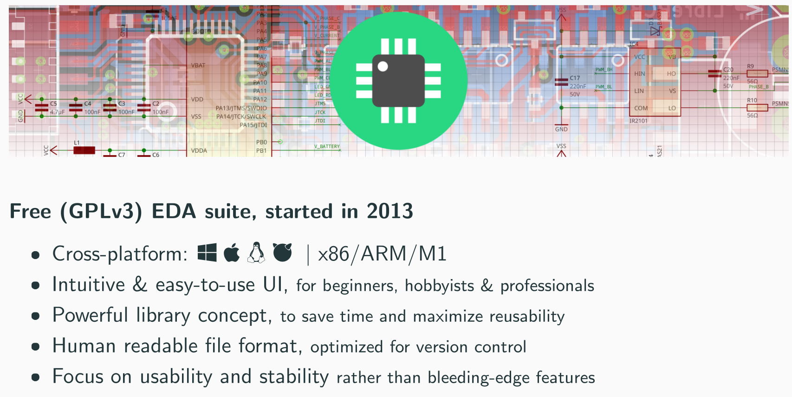
Sponsors & Contributors
PlatinumSilver |
Bronze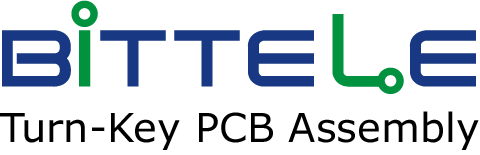 + Donations
|
Thank You!
Funding 2025
~47k EUR Total
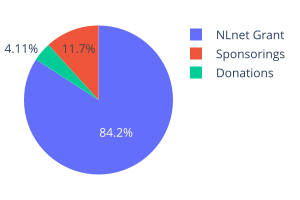
Working (almost) full-time on LibrePCB since end of 2022!
Goal: Sustainable funding without public money
LibrePCB 1.1.0
April 2024
Live Parts Information
EAGLE Project Import
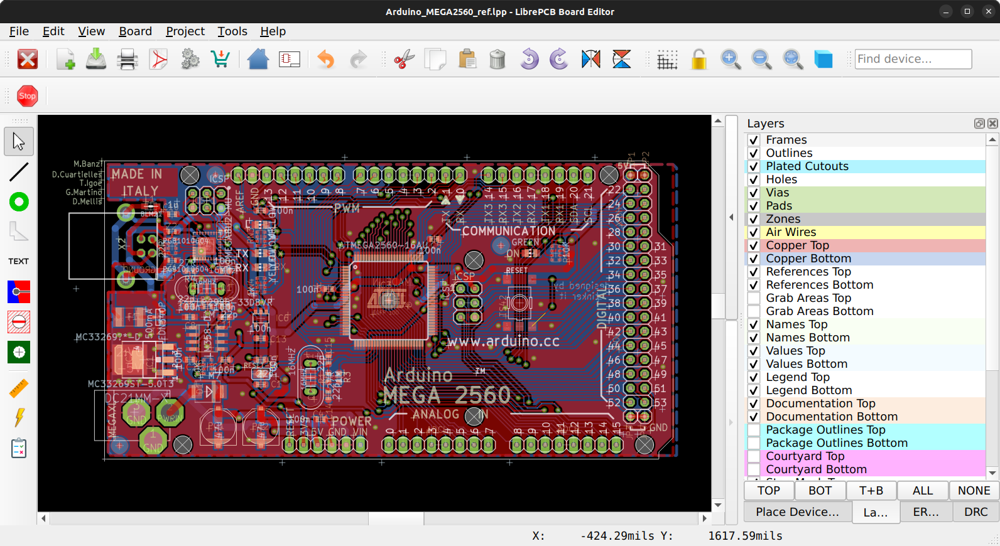
LibrePCB 1.2.0
December 2024
KiCad Library Import
Footprint Datasheet Overlay
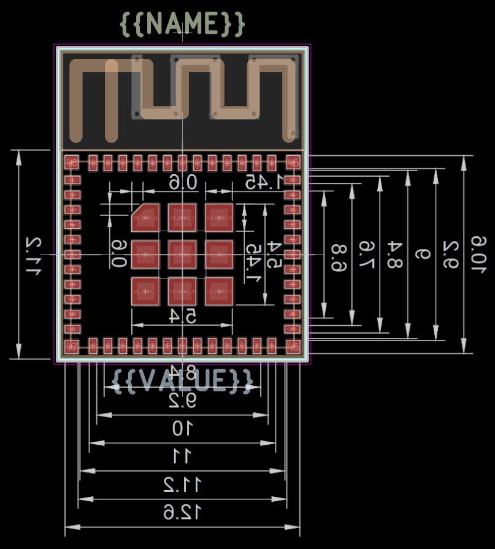
Datasheets in Schematics
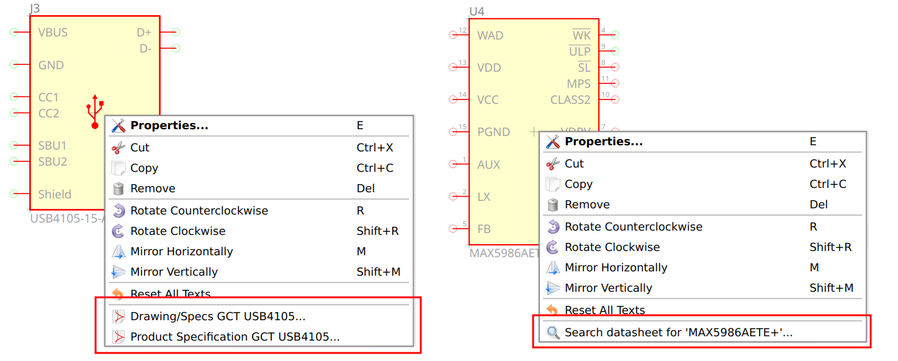
Specctra Export / Import
For External Autorouter (e.g. Freerouting)
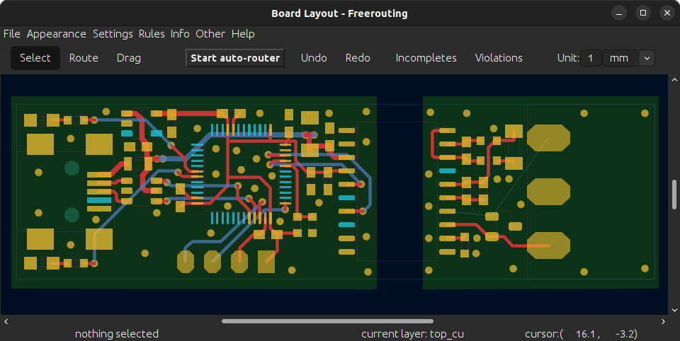
Mass-Import Pins from Datasheet
LibrePCB 1.3.0
March 2025
Migration Qt5 → Qt6
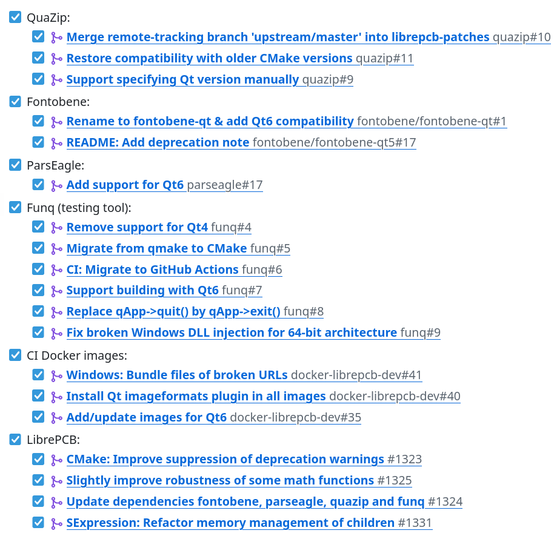
C++ → Rust 
- Faster development
- Less error-prone
- Future-proof
Current state:
0.9% Rust
Interactive HTML BOM Export
LibrePCB 2.0.0
February 2026
Qt Widgets →
- More freedom, more flexibility
- Consistent look & feel across platforms
- Declarative → faster development
- Aligns with our Rust strategy
Tabbed Window
Library Manager
PCB Ordering
Enhanced 3D Viewer
Schematic Buses
Images in Schematics
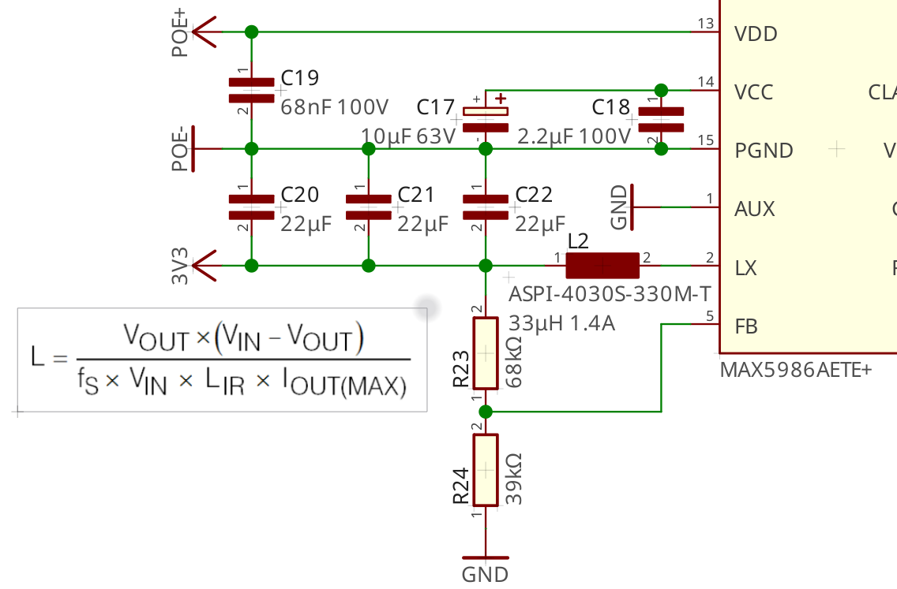
Shared Design Rules & Output Jobs
Choose Your Soldering Technique
Auto-Reload
Enhanced Release Binaries
Signed Windows Releases
Signed MacOS Releases (ARM)
MacOS >= 10.14 Compatibility (Intel)
Code-Signing Sponsored By
Library Updates
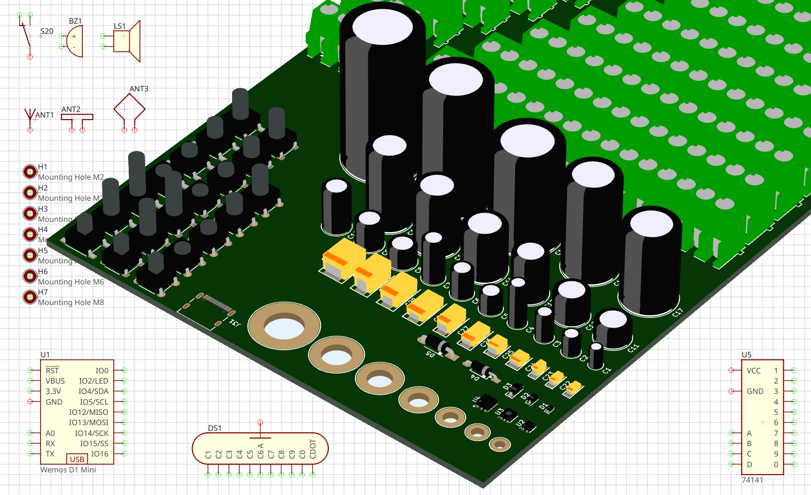
What's Next?
Many ideas, in arbitrary order:
- Polish the new UI, professional look, light theme, ...
- Hierarchical sheets
- Push&shove router
- Funding model (e.g. paid support)
- Any many more...
Thank you!
https://librepcb.orghttps://librepcb.org/donate/
@ubruhin:matrix.org